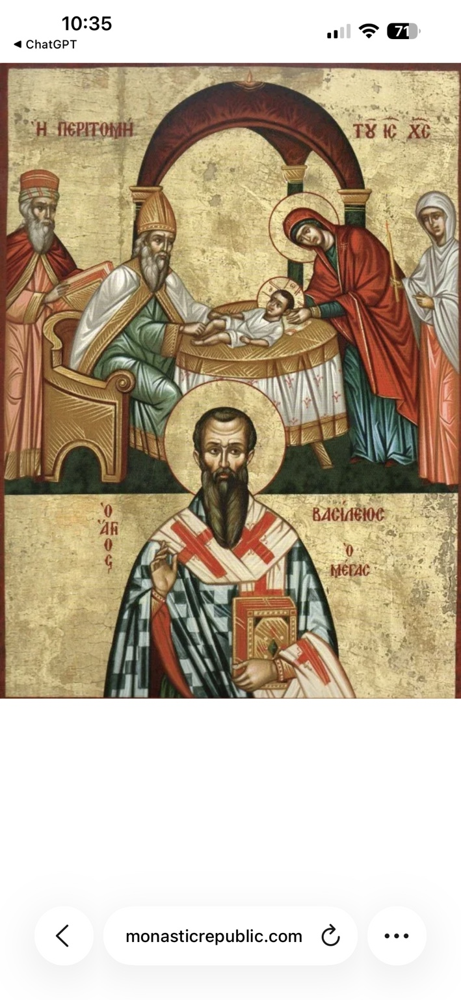
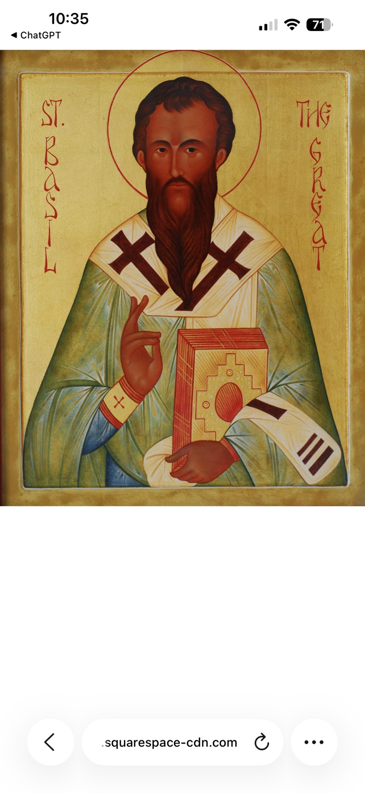

상세보기
분류 주님의 축일·교부
관련 지역 카파도키아
성탄 여드레째 주님의 할례와 이름 예수를 받으심을 기념하며, 카이사리아의 대 바실리오스도 함께 기념한다.
중보기도 주제
새해의 봉헌, 순종, 교회와 목회자, 자선
성육신의 실제성: OCA는 교부들이 이 사건을 그리스도께서 참된 인간 육신을 실제로 취하셨음을 보여 주는 증언으로 해석했다고 설명합니다. 따라서 성탄에서 선포된 성육신의 실재성을 다시 확인하는 축일입니다.
세례와 새 언약: 구약의 할례는 신약의 세례와 연결되는 예표로 해석되며, OCA는 골로새서 2:11–12를 이 의미와 연결합니다.
성 대 바실리오스: 같은 날 교회는 카파도키아 카이사리아의 대주교 성 대 바실리오스(약 330–379)를 기념합니다. 그는 성 대 그레고리오스 신학자와 함께 공부했고 성 마크리나·니사의 성 그레고리오스 등 뛰어난 성인들이 나온 가정에서 성장했습니다.
카파도키아와 순례 지리: 그의 중심 무대인 카이사리아는 오늘날 튀르키예의 카이세리(Kayseri)입니다. 카파도키아 순례에서 성 대 바실리오스는 이 지역의 수도생활·삼위일체 신학·자선 전통을 이해하는 핵심 성인입니다.
신학과 수도생활: 성인은 성령의 신성을 수호하고 니케아 신앙을 변호한 위대한 교부로 기억되며, 공동체적 수도생활의 규범 발전에도 깊은 영향을 남겼습니다.
가난한 이들을 위한 봉사: 그의 이름은 병자·가난한 이·여행자와 도움이 필요한 사람들을 돌보는 대규모 자선 시설 전통과 연결됩니다. 신학과 자비의 실천을 분리하지 않은 교부였습니다.
성 대 바실리오스의 신성한 전례: GOARCH 2026년 1월 1일 전례서는 이날 성 대 바실리오스의 신성한 전례를 명시합니다.
2026년 성경 독서: OCA는 할례 축일의 골로새서 2:8–12 / 루카 2:20–21, 40–52, 성 바실리오스 축일의 히브리서 7:26–8:2 / 루카 6:17–23 등을 이날 독서로 제시합니다.
바실로피타: OCA는 여러 지역에서 성 바실리오스를 기념하여 바실로피타(Vasilopita)를 축복하고 나누며 빵 안에 동전을 넣는 관습도 소개합니다.
중보: 주교와 사제·신학자·교사·수도자·병원과 자선기관에서 봉사하는 이·가난한 이·카파도키아와 카이세리를 순례하는 이·새해를 신앙 안에서 시작하려는 가정을 위한 기도.
☦ 호칭기도
새해의 봉헌을(를) 위하여,
저희에게 자비를 베푸소서.
순종을(를) 위하여,
저희에게 자비를 베푸소서.
교회와 목회자을(를) 위하여,
저희에게 자비를 베푸소서.
자선을(를) 위하여,
저희에게 자비를 베푸소서.
오늘 기념되는 모든 성인이여,
우리를 위하여 하느님께 간구하소서.
주 예수 그리스도, 하느님의 아들이시여, 모든 성인의 기도를 통하여 저희에게 자비를 베푸소서. 아멘.
☦ 1월 통합 호칭기도
오늘의 거룩한 축일을 기억하며, 주님의 할례와 성 대 바실리오스의 신비 안에서 주님께 기도하나이다.
주님, 저희에게 자비를 베푸소서.
성 세라핌 사로프의 수도자이여,
우리를 위하여 하느님께 간구하소서.
예언자 말라키이여,
우리를 위하여 하느님께 간구하소서.
칠십 사도 공경이여,
우리를 위하여 하느님께 간구하소서.
주님 신현 대축일 전야이여,
우리를 위하여 하느님께 간구하소서.
주님 신현·세례 대축일이여,
우리를 위하여 하느님께 간구하소서.
세례자 성 요한 공경이여,
우리를 위하여 하느님께 간구하소서.
성 게오르기오스 호제바 수도자이여,
우리를 위하여 하느님께 간구하소서.
성 폴리에욱토스 멜리테네 순교자이여,
우리를 위하여 하느님께 간구하소서.
니사의 성 그레고리오스이여,
우리를 위하여 하느님께 간구하소서.
공동수도생활의 성 테오도시오스이여,
우리를 위하여 하느님께 간구하소서.
성녀 타티아나 순교자이여,
우리를 위하여 하느님께 간구하소서.
성 헤르밀로스와 스트라토니코스 순교자이여,
우리를 위하여 하느님께 간구하소서.
성 사바 1세 세르비아 대주교 · 성녀 니노 조지아의 계몽자이여,
우리를 위하여 하느님께 간구하소서.
성 바오로 테베의 첫 은수자이여,
우리를 위하여 하느님께 간구하소서.
사도 성 베드로의 사슬 공경이여,
우리를 위하여 하느님께 간구하소서.
성 안토니 대수도자이여,
우리를 위하여 하느님께 간구하소서.
성 아타나시오스와 성 키릴로스 알렉산드리아 대주교이여,
우리를 위하여 하느님께 간구하소서.
이집트의 성 마카리우스 대성인 · 에페소의 성 마르코스이여,
우리를 위하여 하느님께 간구하소서.
성 에우티미오스 대성인이여,
우리를 위하여 하느님께 간구하소서.
성 막시모스 고백자이여,
우리를 위하여 하느님께 간구하소서.
사도 성 티모테오스이여,
우리를 위하여 하느님께 간구하소서.
성 클레멘스 안키라의 주교순교자이여,
우리를 위하여 하느님께 간구하소서.
성녀 크세니아 로마의 수도자이여,
우리를 위하여 하느님께 간구하소서.
성 그레고리오스 신학자이여,
우리를 위하여 하느님께 간구하소서.
성 크세노폰과 가족이여,
우리를 위하여 하느님께 간구하소서.
성 요한 크리소스토모스 유해 이장이여,
우리를 위하여 하느님께 간구하소서.
성 에프렘 시리아인이여,
우리를 위하여 하느님께 간구하소서.
성 이그나티오스 하느님을 품은 이 유해 이장이여,
우리를 위하여 하느님께 간구하소서.
세 성직자 대축일이여,
우리를 위하여 하느님께 간구하소서.
무상치료자 성 키로스와 요한이여,
우리를 위하여 하느님께 간구하소서.
이 달에 기념되는 모든 성인이여,
우리를 위하여 하느님께 간구하소서.
주 예수 그리스도, 하느님의 아들이시여, 지극히 거룩하신 테오토코스와 모든 성인의 기도를 통하여 저희에게 자비를 베푸소서. 아멘.